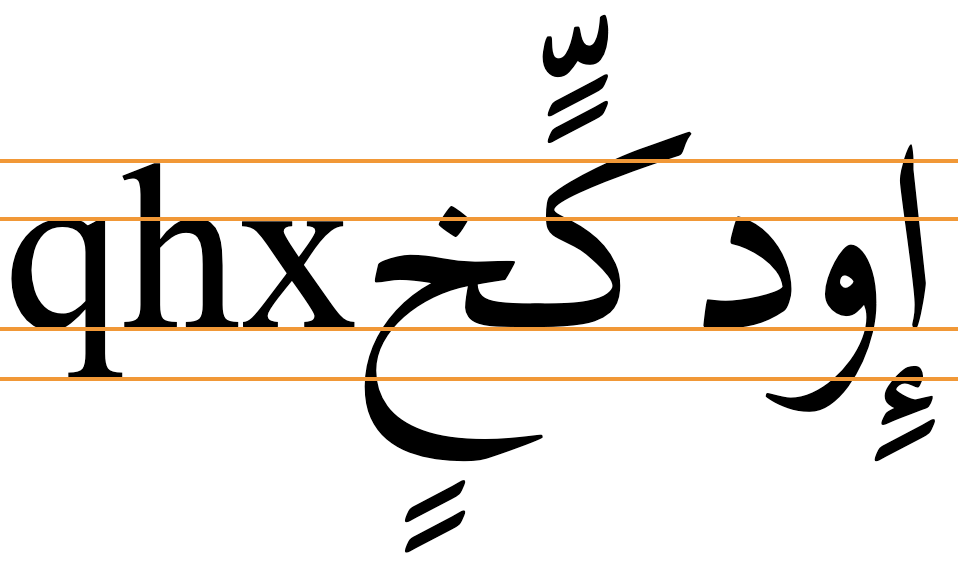
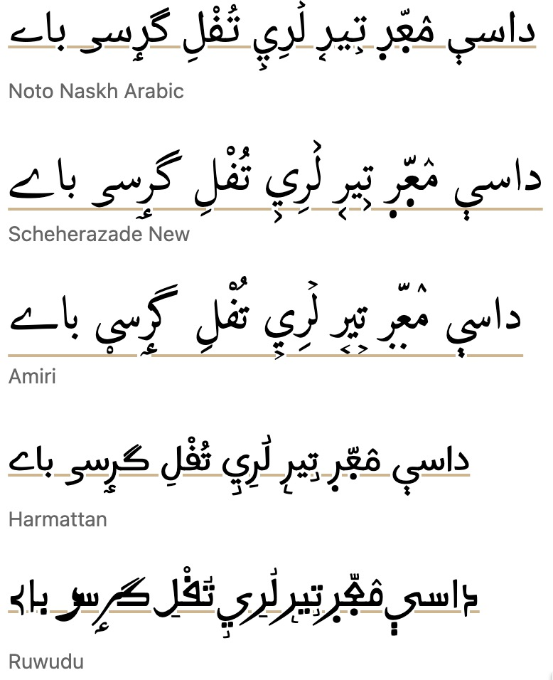

Working with long descenders
The underline for Latin script text generally falls just below the alphabetic baseline. However, for some other writing systems, it is better to move the underline downwards so that it doesn't cut through diacritics or descenders.
Writing systems that extend below the baseline much further than Latin script text include Arabic, most Brahmi-derived scripts, particularly Balinese and Javanese, Tibetan, etc. The following image shows typical metrics for Arabic font glyphs compared to Latin. Note the extra vertical space required.

The CSS specification suggests that, by default, browsers should place an underline at or near the alphabetic baseline, but should also take into account that some scripts will need the underline to be lower. Browsers are encouraged to take these scripts into account for default settings and auto values, but typically some additional styling will be needed.
If you allow the browser to use the default position or an auto value, the line will typically be drawn immediately below the alphabetic baseline, cutting through descenders, subjoined consonants/vowels and diacritics. Gecko browsers will however apply the underline position given by font metrics, if available for that font.
CSS offers three possible strategies for positioning the underline lower than just below the alphabetic baseline. All of these approaches place the underline slightly differently, according to the font used. You therefore need to set the underline position at the same time as the font family. The choice of which to use will often depend on the font used. When you don't know which font will be used, text-underline-position:under may provide the best general approach, although it may not be perfect.
Using text-underline-position:from-font typically lowers the underline, but only for the few fonts that contain the metric. Typically, the underline still cuts through Arabic descenders.
Text-underline-position:under usually pushes the underline down further, and clears most descenders (though not always the diacritics below the descender), and subjoined glyphs.
Text-underline-offset gives you control over the position of the underline, allowing for clearance of text such as in nastaliq fonts, as well as clearance of any diacritics below descenders.
The following subsections provide additional details as well as tests that you can run for yourself. We chose a number of scripts to test that are representative of writing systems with significant downward extensions. These are Arabic (with and without diacritics, and in the nastaliq style), Khmer, Javanese, and Tibetan.
Using built-in font metrics (from-font)
If a font has a built-in metric to indicate the preferred underline position then text-underline-position:from-font should allow you to use that. However, many fonts don't include that metric.
If the font doesn't have built-in metrics to indicate the preferred position of the underline the value falls back to auto, which relies on the browser to do the right thing. Currently, when the value of this property is set to auto Blink and WebKit browsers draw the underline just below the alphabetic baseline, but Gecko applies the from-font position when auto is specified and the font metric exists.
Key points to note are that only a few fonts are likely to make the metric available, and that the position may not always clear the bottom of the glyph descenders or any associated diacritics.
text-decoration: underline;
text-underline-position: from-font;Output in your browser (only the bottom two lines use text-underline-position):
أَمَازِيغ يَوْم فيِ كُلّ لࣸرِيࣺ إِنْسَان
أمازيغ يوم في كل لري إنسان
أَمَازِيغ يَوْم فيِ كُلّ لࣸرِيࣺ إِنْسَان
Choose a font:
More tests...
The following links allow you to test this property and value against a range of fonts. The links open a web page in a separate browser window. The text is composed from lists of words or graphemes that show long descenders.
There are two types of test. One (W3C) allows you to change the font by mousing over or tapping on the fonts in a list. The other (r12a) lists the text with all fonts at the same time. Of course, the tests only work if you have the font installed on your device or platform. Note also that WebKit browsers do not allow you to access non-system fonts unless they are webfonts.
W3C: Arabic (no vowel signs) • Arabic (WITH vowel signs) • Tibetan • Javanese • Khmer
Arabic. Tests with 43 system, Noto, and SIL Arabic fonts found that only 11 moved the underline down when from-font was applied. Of those 11, only 7 actually cleared the descenders. Diacritics below the descenders are not usually present in Arabic and Persian language text, but they may occur for educational or clarification purposes, and there are certain orthographies using the Arabic script that always include all diacritics (such as African ajami texts). When diacritics appear below the descenders they are sometimes bisected by the underline. See the test.

Javanese & Khmer. None of the fonts tested moved the underline.
Tibetan The application of this property only produced a small shift in the position of the underline for those fonts with the metric, and the bottom of the subjoined glyphs (and sometimes single consonant descenders) was not cleared.
Positioning below the em box (under)
An alternative to from-font that works for all fonts is text-underline-position:under. This pushes the underline below the font's em box descent metric.
The position below the alphabetic baseline still varies from font to font, but the underline typically appears slightly lower than that produced byfrom-font, and on average produces better results. From the fonts tested, however, there are still a handful of fonts where the Arabic diacritics are bisected, and in one or two fonts the distance becomes greater than you might expect.
text-decoration: underline;
text-underline-position: under;Output in your browser (only the bottom two lines use text-underline-position):
أَمَازِيغ يَوْم فيِ كُلّ هٰذِهِ إِنْسَان
أمازيغ يوم في كل هٰذه إنسان
أَمَازِيغ يَوْم فيِ كُلّ هٰذِهِ إِنْسَان
Choose a font:
More tests...
The following links allow you to test this property and value against a script using a range of fonts. The links open a web page in a separate browser window. You will see the CSS being applied, and a list of OS fonts, Noto fonts, and SIL fonts. (You can add other fonts by clicking on 'manage fonts'.) Mouse over the names of the fonts you have on your system to apply them to the text. You can also edit the CSS. The text is composed from lists of words that show long descenders.
Arabic (no vowel signs) • Arabic (WITH vowel signs) • Tibetan • Javanese • Khmer
For Arabic fonts, this setting generally clears the bottom of the descenders, but several fonts still run the underline through or above the diacritics. For a small number of fonts there is a sizeable gap between the bottom of the ink and the underline.
Javanese. Javanese performed quite well in the tests on Firefox (Gecko). However, quite different results were seen on Chrome (Blink), with the line bisecting all of the descenders. This illustrates how underline positioning can vary, not only by font, but also by browser. (Safari (WebKit) rendered only the Noto font, with a line position the same as Firefox.)


Specifying the distance explicitly
To be sure that an underline clears the glyphs, regardless of whether or not the font contains a metric for that, use text-underline-offset.
text-decoration: underline;
text-underline-offset: <distance>;Output in your browser (only the bottom line uses text-underline-offset):
أَمَازِيغ يَوْم فيِ كُلّ هٰذِهِ إِنْسَان
أَمَازِيغ يَوْم فيِ كُلّ هٰذِهِ إِنْسَان
Choose a font: Change the offset:
The value can be expressed as a fixed distance, for example using px, but generally speaking this is suboptimal because if the font size is changed that distance remains the same. It would be necessary to change the underline offset each time a change is made to the font size. A better approach is to specify the distance in ems or as a percentage of 1em.
The actual value needed will depend on the font used. It also depends on whether or not the text contains diacritics below the descenders. A simple font with moderate descenders, such as Arial, may be fine with a setting of 50%, but a font such as Amiri may need to be set at 70%, and a nastaliq font, such as Noto Nastaliq Urdu used for Kashmiri (which retains all diacritics), may require a setting of 90%.
It follows, then, that the font family and the underline offset for the text need to both be set at the same time. However, it's not necessary to change the value when the font size varies.
If the value is set to auto the browser takes control of the positioning. Note that if text-underline-position is also set to from-font, then that overrides any text-underline-offset:auto setting.